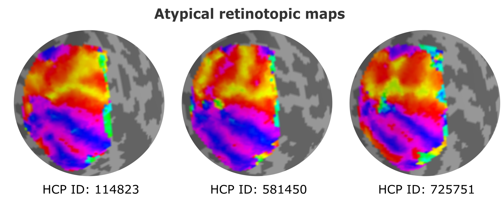
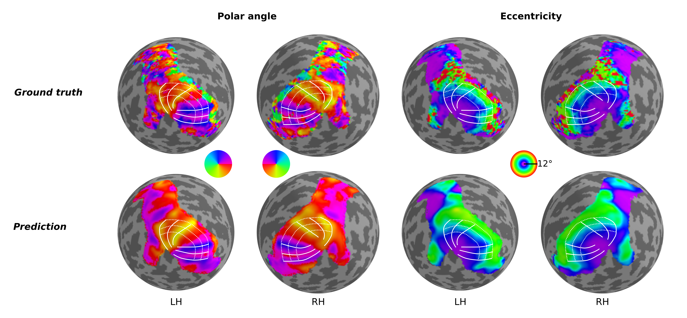

Interindividual variability in retinotopic organization of the human brain
Are all human brains functionally identical in terms of cortical organization? To address this question, we employed functional magnetic resonance imaging (fMRI) data and focused on retinotopic maps, which offer precise quantification of visual representations in the brain. Specifically, we delved into the organization of the second and third visual areas (V2 and V3), regions long believed to follow a stereotypical organization across the human population. Surprisingly, our research uncovered a previously unknown degree of variability in the organization of V2 and V3 among individuals. Contrary to the traditional view of stereotypical arrangements, only one-third of the studied individuals exhibited the expected pattern. The remaining individuals showcased more complex geometric mappings of the retina onto the cortex.

Predicting retinotopic organization from brain structure
Retinotopic mapping in human visual cortex is known to be remarkably similar across participants; however, considerable inter-individual variation does exist, and this variation has been shown to be directly related to variability in cortical folding patterns and other anatomical features. In fact, previous studies have shown that one can quite reasonably predict the functional organization of the visual cortex in participants by warping an atlas or template (Benson et al., 2014, 2012; Benson and Winawer, 2018) according to their specific anatomical data. While these approaches are able to provide reasonable estimates of their retinotopic maps, they have not – when using anatomical information alone – been able to capture the detailed idiosyncrasies seen in the actual measured maps of those participants. Thus, we aimed to build a neural network able to predict individual differences in retinotopic maps by solely exploiting differences in anatomical features of the cortical surface.
